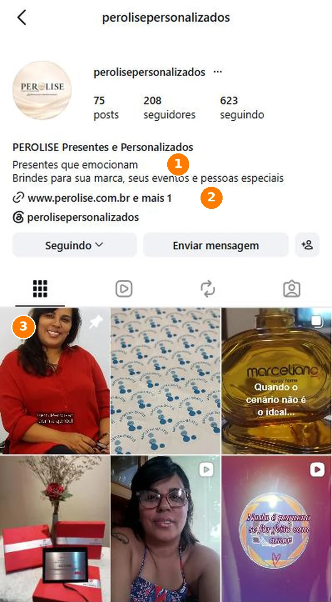
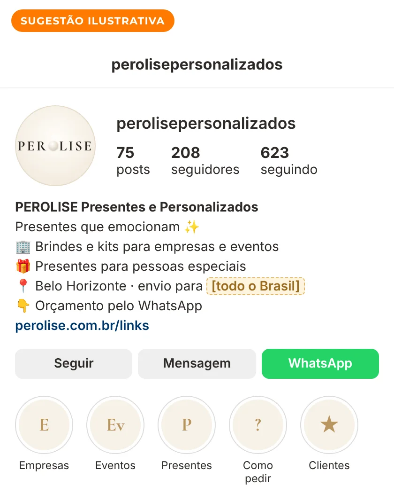
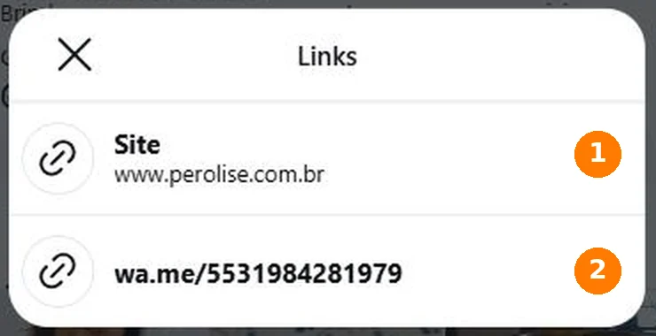
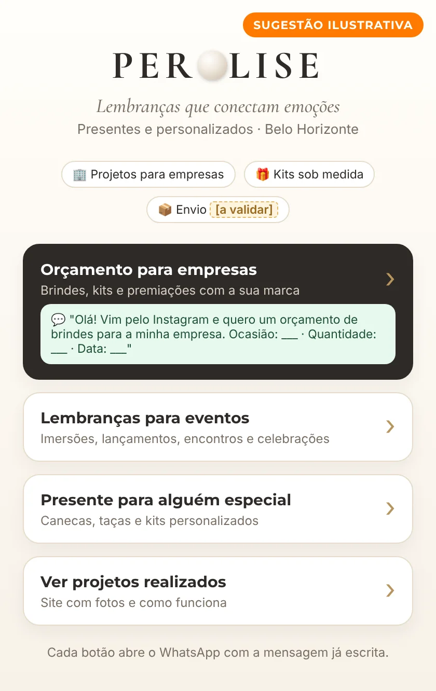
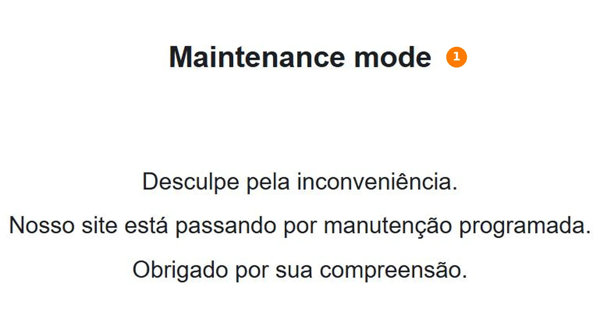
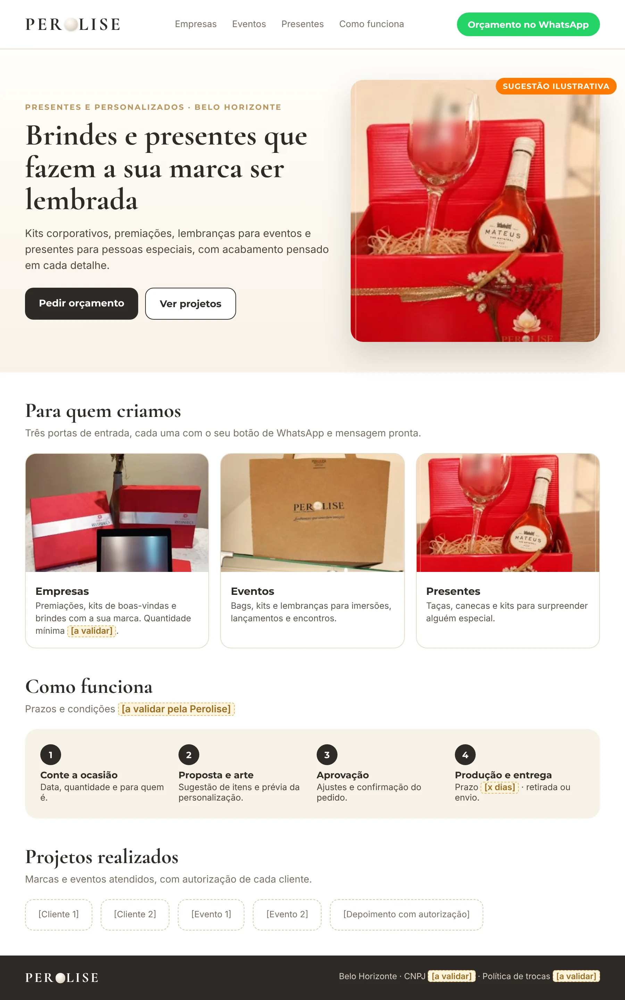
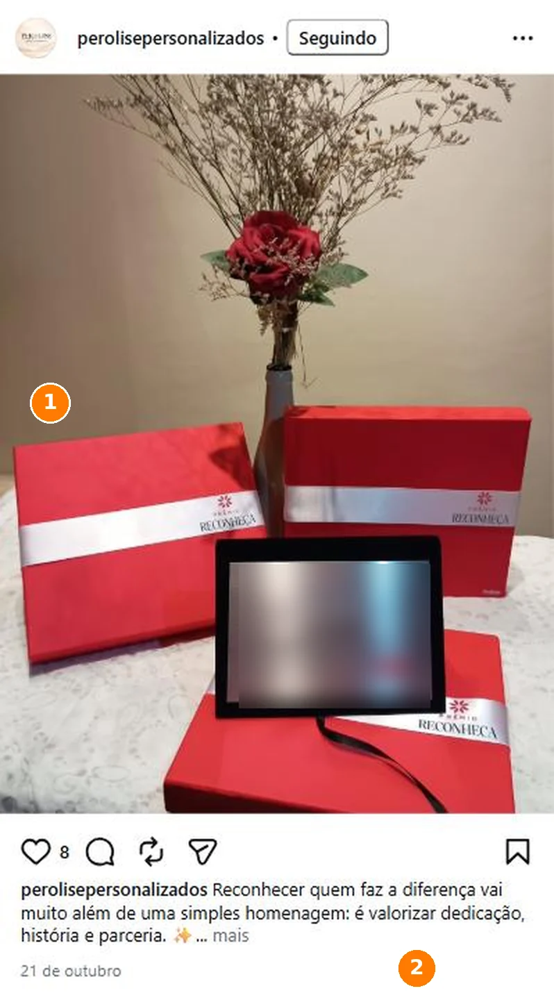
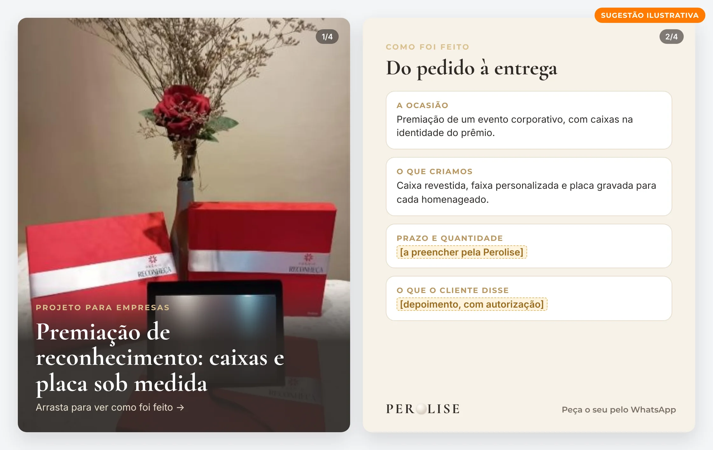
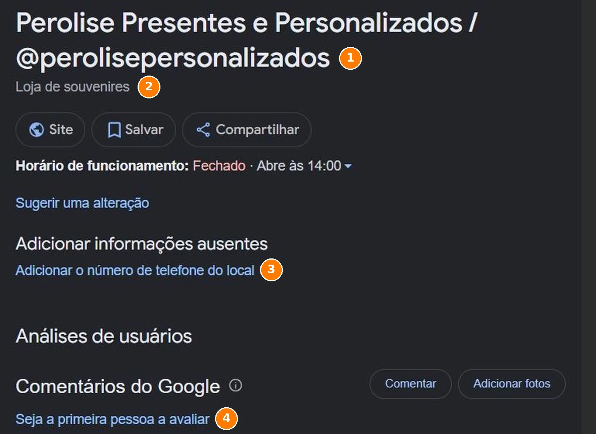
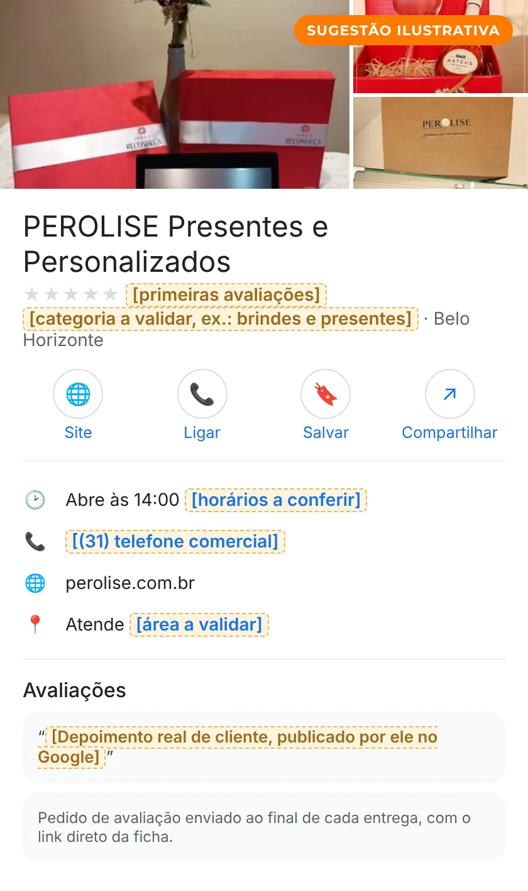

Leitura pública inicial
Olhamos, só por fora, o que a PEROLISE mostra hoje ao mercado no Instagram, no link da bio, no site e nas buscas do Google. Esta leitura reconhece o que já funciona e aponta possibilidades de evolução, para considerar conforme os objetivos de vocês.
Usamos o caminho do Método VOS: Ver com clareza, Ordenar o que existe e Sustentar com constância. Este é o recorte da PEROLISE. Em cada etapa, mostramos o que já funciona e uma possibilidade de evolução.
O nome com a pérola no lugar do "O", a frase "Lembranças que conectam emoções" e o "Vem PEROLISAR com a gente!" no fim das legendas tornam a marca fácil de reconhecer. Possibilidade: dizer na bio a cidade, o envio e qual público vem primeiro.
Premiações, lançamento de livro, imersões e brindes de marca aparecem no feed, com fotos do produto pronto. Possibilidade: um destino que esteja no ar e separe cada pedido (empresa, evento ou presente).
Cerca de 40 publicações entre junho e novembro de 2026, com datas como a Copa e o fim de ano. Possibilidade: uma ficha no Google com avaliações e um calendário de datas corporativas.
Se um caminho já traz conversão, ele não precisa mudar. A PEROLISE já tem identidade, portfólio e constância. Se os pedidos de hoje chegam pelo direct e pelo WhatsApp, isso é uma base. O que segue são possibilidades, para usar quando fizerem sentido para os objetivos de vocês.
A bio fala com três públicos ("sua marca, seus eventos e pessoas especiais"), e o feed mostra os três. Se os três já convivem bem, o caminho segue. Se o objetivo for crescer, a resposta a esta pergunta muda o que a bio, o link, o site e os anúncios dizem primeiro. Só vocês sabem qual linha traz mais resultado hoje. Por isso, três cenários para conversar.
Brindes, kits e premiações como linha principal.
Lembranças, bags e kits para imersões, lançamentos e encontros.
Uma ordem de prioridade e um caminho claro para cada pedido.
Leitura qualitativa, baseada apenas no que é público. O Raio-X completo mede isso com dados internos e entrevista. Ainda não conversamos, então esta é uma leitura de fora: só vocês sabem o que já traz resultado.
Antes de mudar qualquer coisa, vale proteger o que já gera confiança.
Brindes para a Thermas Internacional, caneca para um lançamento da Editora Empreender, caixas de uma premiação corporativa, bags de uma imersão e um microfone personalizado. É prova concreta de que a marca entrega para empresas.
A série "Por trás de…" transforma cada peça em uma história: o lançamento, a homenagem, o encontro. Isso conversa com quem compra presente pela emoção, e não só pelo item.
O post fixado apresenta a origem da PEROLISE, e há posts sobre a Dani, sobre a mentoria e sobre o Mapa do Lucro. Mostra quem faz e que a empresa investe em gestão.
Sacola kraft com a logo, caixa vermelha com laço e a frase "Lembranças que conectam emoções": a marca aparece na mão de quem recebe.
Posts da Copa, de fim de ano e um aviso de "agenda de novembro com algumas poucas vagas". Data e escassez real ajudam a decidir.
Um post explica que a IA é usada como ferramenta de design para o cenário, e que o produto é real. Dizer isso com clareza protege a confiança.
À esquerda, como está hoje (print real). À direita, uma possibilidade ilustrativa na própria identidade da PEROLISE, montada com fotos dos posts de vocês. É um exemplo de direção, não a arte final, e depende dos objetivos de vocês.
Nome completo, uma frase de promessa, os três públicos e dois links. Quem chega entende que a PEROLISE faz presentes e brindes personalizados.


Ao tocar em "e mais 1", aparecem dois links: o site e o WhatsApp. É um caminho curto, que já funciona para quem sabe o que quer.


Ter perolise.com.br é uma boa base. No dia da consulta (12/11/2026), o endereço mostrava uma página de "manutenção programada". Pode ser uma pausa planejada, e nesse caso vale só acompanhar a volta.


Premiação corporativa, lançamento de livro, imersões e brindes de marca. A legenda da premiação já convida para o orçamento pelo direct e pelo link da bio.


Quem busca "perolise presentes personalizados" encontra o Instagram em primeiro lugar e uma ficha da empresa com horário e link do site. É um bom começo.


Três jeitos de conversar aparecem com frequência no feed. Cada um já funciona por si.
"Por trás de um grande lançamento…", "Por trás de cada feedback…": a peça vira um momento, não só um produto.
Ponto forteA Dani, a mentoria e o Mapa do Lucro mostram uma empresa que cresce com cuidado e método.
Ponto forte"Agenda de novembro com algumas poucas vagas": prazo real, que ajuda quem está em dúvida a decidir.
Ponto forteConsultamos o Instagram, os links da bio, o site e buscas no Google. Registramos também o que não encontramos, porque ausência de prova também é informação, e pode apenas indicar que o conteúdo existe e não foi alcançado.
| Item | O que encontramos | Fonte | Leitura |
|---|---|---|---|
| @perolisepersonalizados, com 75 posts, 208 seguidores e 623 seguindo. Bio com promessa e três públicos, perfil no Threads e posts marcados em Belo Horizonte. | Instagram (12/11/2026) | Ponto forte | |
| Links da bio | Dois links: www.perolise.com.br e wa.me (WhatsApp direto). | Instagram (12/11/2026) | Ponto forte |
| Site da bio | perolise.com.br, em WordPress, mostrava "Maintenance mode" e a mensagem de manutenção programada (resposta HTTP 503). | perolise.com.br (12/11/2026) | Possibilidade |
| Endereço nas legendas | Posts recentes indicam www.perolisepersonalizados.com.br. O endereço não abriu no nosso teste. | Legendas do Instagram e teste de acesso (12/11/2026) | Conferir |
| Google (ficha da empresa) | "Perolise Presentes e Personalizados / @perolisepersonalizados", categoria "Loja de souvenires", com horário e link do site. Sem telefone e sem avaliações publicadas. | Busca no Google (12/11/2026) | Possibilidade |
| Busca pelo nome | O Instagram aparece em primeiro lugar. Em uma das buscas, o Google sugeriu "pirólise" no lugar de "perolise". | Busca no Google (12/11/2026) | Conferir |
| Clientes e parceiros citados | Thermas Internacional, Editora Empreender, uma premiação corporativa, imersões de produtoras e mentoras e encontros de networking, citados pela própria PEROLISE nos posts. | Legendas do Instagram | Ponto forte |
| Reclame Aqui | Não localizamos página própria nas buscas feitas. | Buscas públicas | Não localizado |
| CNPJ e dados da empresa | Não aparecem no Instagram nem na página de manutenção. Não fizemos consulta de cadastro. | — | Conferir |
No celular, deslize a tabela para o lado.
Se os caminhos de hoje já trazem conversão, eles seguem. Se o objetivo for ampliar com anúncios, estas três camadas ajudam cada real investido a render.
Um exemplo de sequência, a ajustar depois de conversarmos sobre os objetivos de vocês. O que já funciona entra como base e é preservado.
Esta leitura é um recorte do que o Raio-X mostra por dentro. Se fizer sentido, a gente conversa sobre os objetivos de vocês e sobre o que vale, ou não, mudar.
Quero conversar pelo WhatsApp Sem compromisso · resposta pelo WhatsApp